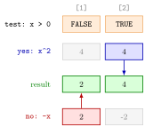

Vectorized ifelse()¶
Definition¶
The function ifelse(test, yes, no) makes an element-wise choice between two vectors. For a logical vector test, it returns a vector of the same length as test whose element is
- the -th element of
yeswheretest[i]isTRUE, - the -th element of
nowheretest[i]isFALSE, NAwheretest[i]isNA.
Shorter yes and no vectors are recycled to the length of test. Several cases are handled by nesting: another ifelse() call is placed in the yes or no position.
Interpretation¶
ifelse() applies an if–else statement to every element of a vector at once. Where if asks one question and runs one block, ifelse() asks the question separately for each position and fills that position from one of two prepared answer vectors.

The figure is Example 1. The three input rows are lined up by position, as in any vectorized operation. In position 1 the test is FALSE, so the result takes 2 from the no row; in position 2 it is TRUE, so it takes 4 from the yes row. The greyed cells were computed as well but are not used.
That last point matters: as soon as test contains both TRUE and FALSE, R computes the whole yes vector and the whole no vector before it picks. A branch that is invalid for some elements still runs on them, so ifelse(x >= 0, sqrt(x), NA) warns about NaNs produced even though no NaN reaches the result. For several cases the nested calls are read like an else if chain: the outer test is decided first, and the inner ifelse() only matters for the elements sent to its position. The result always has the length of the outermost test.
With constant answers, ifelse(x > 0, 1, 0) is the indicator function of the set , applied to each element.
A common mistake is to expect a missing test value to fall into the no branch. It does not: an NA in test gives NA in the result, so missing values need their own is.na() test, placed first.
Key Results¶
length(ifelse(test, yes, no))equalslength(test);yesandnoare recycled if they are shorter.- Element of the result comes from
yes[i]orno[i], so the two answer vectors must be aligned withtestby position. - Both
yesandnoare evaluated in full (whenevertestcontains both values), including elements that are not selected. - A missing value in
testgives a missing value in the result. - Nested calls
ifelse(t1, a, ifelse(t2, b, c))give the element-wise version ofif–else if–else, with the tests applied in order.
Examples¶
1. The piecewise function on a vector. For if and otherwise:
Here x^2 is 4 4 and -x is 2 -2; position 1 takes from -x, position 2 from x^2.
2. Three cases with nesting. To return 0 for missing values, put the is.na() test outside:
x <- c(NA, -2, 2)
ifelse(is.na(x), 0, ifelse(x > 0, x^2, -x))
#> [1] 0 2 4
ifelse(x > 0, x^2, -x)
#> [1] NA 2 4
The second call shows the missing test value passing straight through.
3. Price discounts. Prices of at least 1 get 15% off, prices from 0.5 up to 1 get 10% off, and cheaper items keep their price:
price <- c(0.75, 0.45, 1.1, 0.8, 0.65, 1, 1.25, 0.55, 0.3, 0.9)
ifelse(price >= 1, price * 0.85,
ifelse(price >= 0.5, price * 0.9, price))
#> [1] 0.6750 0.4500 0.9350 0.7200 0.5850 0.8500 1.0625 0.4950 0.3000 0.8100
The inner test only needs price >= 0.5, because it only decides the elements where price >= 1 was FALSE.
4. Pitfall: both branches run. Taking square roots only of the nonnegative elements:
x <- c(4, -1, 9)
ifelse(x >= 0, sqrt(x), NA)
#> [1] 2 NA 3
#> Warning message:
#> In sqrt(x) : NaNs produced
The result is correct, but sqrt(x) was computed for all three elements, including -1, which produced the warning.
Prerequisites¶
Related Concepts¶
Sources¶
- Programming for EOR · Week 3
- Lecture 3, Part 1 Loops and Control Flow, sections "ifelse() Function for Vectorised Control Flow" and "Extending if–else beyond two branches"; Solutions Week 3, Part 1 Exercise 7
Aliases: ifelse, ifelse(), vectorised ifelse, vectorized if else, nested ifelse Keywords: element-wise choice, test, yes, no, nested ifelse(), both branches evaluated
Last updated: 10 November 2026 16:43
Vectorized ifelse()if–else StatementVectorized OperationsVector RecyclingMissing ValuesLogical Subsettingfor LoopLoops versus VectorizationIndicator Function